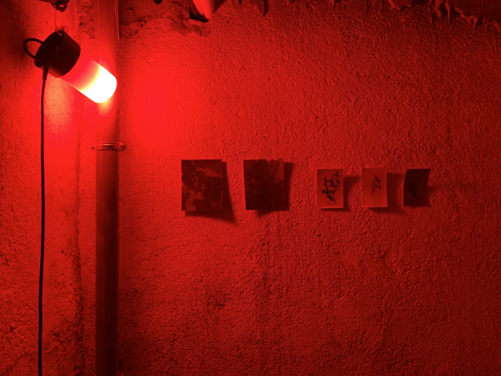
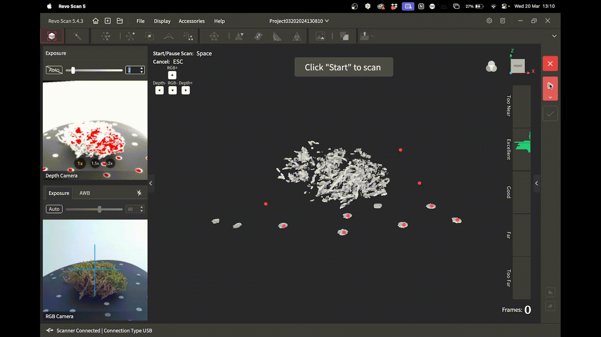
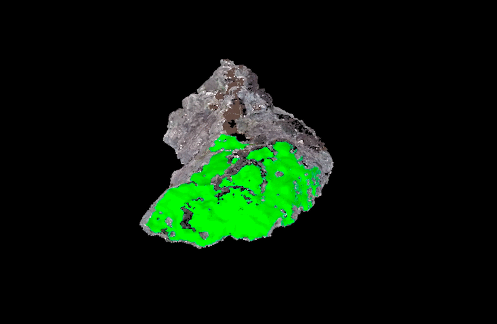

.png) DoYouSeePatterns en 'Transfrontalier'.
DoYouSeePatterns en 'Transfrontalier'.

DO YOU SEE PATTERNS.
Instalación Interactiva. Investigación Visual con escaner 3d y fotografia analógica.
[2024]
DoYouSeePatterns en 'Transfrontalier'.
.png)



Una residencia de una semana en La Grand Maison Rouge, ubicada en La Cerdanya, justo en la frontera entre España y Francia. Esto no fue una coincidencia, ya que el tema de la exploración trataba sobre los márgenes y la forma en que interactúan tanto como un espacio para dividir como para conectar.
La “frontera” que seleccionamos para investigar durante la semana fue la que existe entre lo digital y lo físico, lo virtual y lo analógico. Seguimos jugando y oscilando entre estas dos dimensiones, cambiando de una a otra e intentando explorar lo que sucede en el medio.
La exposición incluyó nuestros negativos fotográficos, una composición de muestras recolectadas, nuestro cortometraje “Musgo Digital”, una serie de imágenes documentando el proceso y un área interactiva donde los visitantes podían experimentar con texturas digitales sobre muestras físicas.
Un frigorífico abandonado en la sala de calderas resultó ser el espacio perfecto para exhibir nuestro proyecto.